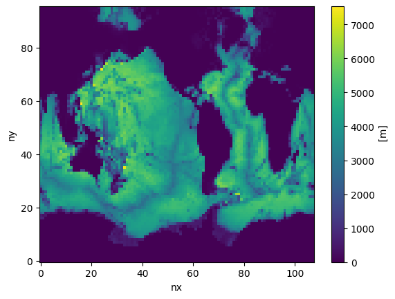

Coarsen an existing MOM6 grid
In this notebook, we create a coarse versions of an existing MOM6 grid, tx2_3v2. Setting CX=5 below results in a grid with ~3 degree resolution, while setting it to 15 results in a grid with ~10 degree resolution.
[1]:
# CX: Coarsening factor
# CX, grid_name = 15, 'tx10deg' # 10-degree resolution
CX, grid_name = 5, 'tx3deg' # 3-degree resolution
1. Import Modules
[2]:
%%capture
import xarray as xr
from datetime import datetime
from mom6_bathy.grid import Grid
from mom6_bathy.topo import Topo
[3]:
datestamp = datetime.now().strftime('%Y%m%d')
2. Create a MOM6 grid object from an existing supergrid
tx2_3v2 is the current MOM6-CESM workhorse grid (0.66deg, tripolar).
[4]:
grid_orig = Grid.from_supergrid('/glade/p/cesmdata/inputdata/ocn/mom/tx2_3v2/ocean_hgrid_221123.nc')
3. Read the bathymetry
[5]:
topo_orig = Topo.from_topo_file(grid_orig, '/glade/p/cesmdata/inputdata/ocn/mom/tx2_3v2/ocean_topo_tx2_3v2_240501.nc')
3. Coarsen the grid and topography:
[6]:
topo = topo_orig[::CX, ::CX]
grid = topo._grid
[7]:
topo.depth.shape
[7]:
(96, 108)
[8]:
topo.depth.plot()
[8]:
<matplotlib.collections.QuadMesh at 0x7f9498efc090>

4. Modify Depth
Important: After coarsening the grid, use the Topo Editor widget to erase disconnected basins. Carefully inspect the domain and make necessary adjustments to ensure physical consistency. For example, you may need to connect North and South America to prevent unintended ocean passages or isolated water bodies.
[9]:
%matplotlib ipympl
from mom6_bathy.topo_editor import TopoEditor
TopoEditor(topo)
[9]:
5. Save the grid and bathymetry files
[10]:
# MOM6 supergrid file:
grid.write_supergrid(f"./ocean_hgrid_{grid_name}_{datestamp}.nc")
# MOM6 topography file:
topo.write_topo(f"./ocean_topog_{grid_name}_{datestamp}.nc")
# CICE grid file:
topo.write_cice_grid(f"./cice_grid_{grid_name}_{datestamp}.nc")
# SCRIP grid file (for runoff remapping, if needed):
topo.write_scrip_grid(f"./scrip_grid_{grid_name}_{datestamp}.nc")
# ESMF mesh file:
topo.write_esmf_mesh(f"./ESMF_mesh_{grid_name}_{datestamp}.nc")
[11]:
# Also coarsen chlorophyl and salt restoring input files:
chl_orig = xr.open_dataset('/glade/p/cesmdata/inputdata/ocn/mom/tx2_3v2/seawifs-clim-1997-2010-tx2_3v2.230416.nc')
chl = chl_orig.isel(LON=slice(0, -1, CX), LAT=slice(0, -1, CX))
chl.to_netcdf(f"./seawifs-clim-1997-2010-{grid_name}_{datestamp}.nc")
salt_orig = xr.open_dataset('/glade/p/cesmdata/inputdata/ocn/mom/tx2_3v2/state_restore_tx2_3_20230416.nc')
salt = salt_orig.isel(LON=slice(0, -1, CX), LAT=slice(0, -1, CX))
salt.to_netcdf(f"./state_restore_{grid_name}_{datestamp}.nc")
[ ]: